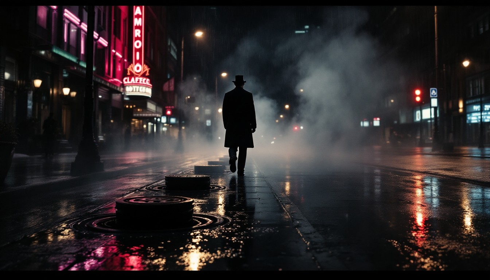

ARCHIVAL REGISTRY
2026 COLLECTION
Discover something
IN
4K
FESTIVAL
4K ULTRA HD / DOLBY VISION
10 EXHIBITED WORKS // VIEW MODE: EXPANDED GALLERY
MIDNIGHT THRILLS:
Six uncompromising tales of betrayal, neon-lit corridors, and moral
ambiguity. Curated by the Obsidian Cinematheque editorial board.
Discover something
worth watching.
Hand-curated cinema, limited series, and independent masterpieces from the
world's most visionary storytellers.
IN
ROTATION
1,482
4K
REMASTERED
620+
FESTIVAL
LAURELS
94
ALL TITLES
FEATURE FILMS
LIMITED SERIES
DOCUMENTARIES
AUTEUR CINEMA
SCI-FI & CYBERPUNK
NEO-NOIR
PSYCHOLOGICAL THRILLER
FESTIVAL WINNERS
SORT:CURATED STAFF PICKS
YEAR:2025:2026
RATING: 8.5+

CURATOR'S SPOTLIGHT
EXHIBITION #42MIDNIGHT THRILLS:
NOIR IN THE 21ST CENTURY
Six uncompromising tales of betrayal, neon-lit corridors, and moral ambiguity. Curated by the Obsidian Cinematheque editorial board.